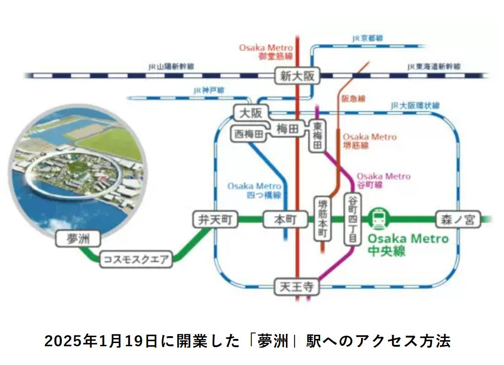
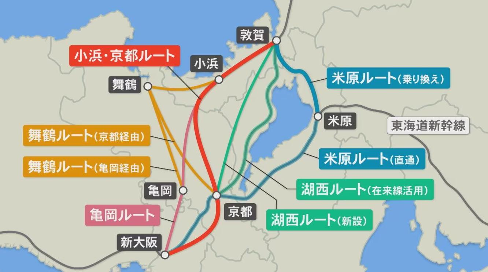

Osaka Metroは「夢洲・森之宮」を両翼とした都市開発と自動運転技術の社会実装を加速させている。一方、北陸新幹線はルート選定とコスト増大の壁に直面しており、2026年時点では早期着工に向けた政治的・技術的調整が焦点となっている。
1. エグゼクティブ・サマリー
Osaka Metroは「夢洲・森之宮」を両翼とした都市開発と自動運転技術の社会実装を加速させている。一方、北陸新幹線はルート選定とコスト増大の壁に直面しており、2026年時点では早期着工に向けた政治的・技術的調整が焦点となっている。
2. Osaka Metro：東西の拠点開発と次世代モビリティ戦略
 図1：Osaka Metro夢洲延伸と都市拠点戦略2.1 「西の拠点」夢洲延伸と「東の拠点」森之宮新駅
Osaka Metroは中央線を軸とした東西の都市軸強化を最優先課題としている。
- 夢洲延伸（西の拠点）： 2025年1月19日、コスモスクエア駅から夢洲駅までの約3.2kmが開業した。これは万博輸送のみならず、2030年秋に予定される統合型リゾート（IR）開業を見据えた国際観光拠点化の布石である。
- 森之宮新駅（東の拠点）： 2028年春の開業を目指し、森ノ宮駅から検車場引き込み線を活用した約1.1kmの支線整備が進められている。大阪公立大学の新キャンパスや1万人規模のアリーナ建設と連動し、東部エリアの賑わいを創出する。
2.2 鉄道・バスの自動運転と都市型MaaS
労働力不足への対応と安全性向上を目的として、先端技術の実装が進んでいる。
- 鉄道（GoA2.5）： 2025年2〜3月、中央線400系車両を用いた夢洲〜大阪港間での自動運転実証実験が実施される。
- バス（レベル4）： 万博期間中、舞洲から夢洲間において国内初となる一般道での大型EVバスによるレベル4自動運転が認可されている。
- 都市型MaaS： 御堂筋線・中央線の計15駅のリニューアルと並行し、地下鉄、バス、オンデマンド交通をシームレスに繋ぐデジタル基盤の構築を推進している。
3. 北陸新幹線延伸：ルート論争と2026年の現状分析
 図2：北陸新幹線ルート選定の比較3.1 着工スケジュールの遅延と財源問題
敦賀―新大阪間の全線開業に向けたプロセスは、極めて不透明な状況にある。
- 現状： 2026年度政府予算案では「事業推進調査費」として14.5億円が計上されるにとどまり、本格着工は2026年度以降に先送りされる公算が高い。
- コスト高騰： 建設費は当初想定を大幅に上回る5兆円超に膨らんでおり、B/C（費用対効果）の再検討や財源フレームワークの構築が急務となっている。
3.2 「小浜・京都ルート」と「米原ルート」の再燃
ルート選定を巡る議論が再び活発化している。
- 小浜・京都ルート（現行計画）： JR西日本が乗り換えなしの直通効果を重視して推進。しかし、京都市内の地下水脈への影響や環境問題が大きな障壁となっている。京都駅の位置については「南北案」と「桂川案」の比較調査が継続されている。
- 米原ルート（再浮上）： 石川県の馳知事や日本維新の会が、コスト抑制（約5,900億円〜1兆円）と工期短縮の観点から再検討を求めている。JR東海とのダイヤ調整や乗り換えの発生が課題である。
4. 広域経済効果と「新大阪」ハブ拠点戦略
4.1 経済波及効果と交流人口の拡大
全線開業が実現した場合、関西および日本全体に多大な便益をもたらすと試算されている。
- 直接的効果： 全国で年間約2,700億円の経済波及効果が見込まれ、交流人口は年間約1,910万人増加する。
- 時間短縮： 新大阪〜金沢間は約80分（45分短縮）、新大阪〜福井間は約55分（45分短縮）で結ばれる。
4.2 スーパー・メガリージョンと国土強靭化
- リダンダンシーの確保： 南海トラフ地震等の災害時、東海道新幹線が寸断された場合でも、北陸経由で1日約6万人の移動を代替できる。
- 新大阪駅の再開発： リニア中央新幹線、北陸新幹線、在来線の結節点として、新大阪駅周辺を「大阪の新都心」へと改造するまちづくり方針が進められている。
5. 結論：2030年代に向けた展望
大阪の都市力強化には、Osaka Metroによるきめ細かな市内モビリティの高度化と、北陸新幹線による広域ネットワークの直結が不可欠である。今後は、高騰する建設費への公的支援のあり方や、京都エリアにおける環境対策の科学的立証が、全線開業への鍵を握る。